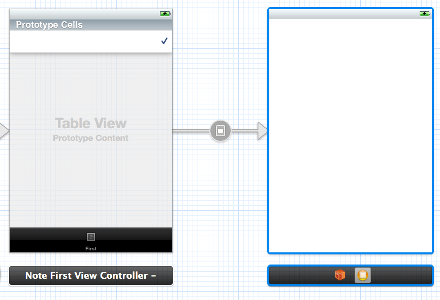

Wanted to use MPMoviePlayerViewController but really don’t know how to use initWithContentURL in the context of prepareForSegue

It is very easy to remove the tab bar at the bottom.
Also need to check ‘hides bottom bars when push’ option
Wanted to use MPMoviePlayerViewController but really don’t know how to use initWithContentURL in the context of prepareForSegue
It is very easy to remove the tab bar at the bottom.
Also need to check ‘hides bottom bars when push’ option
I bought some powdered water but I don’t know what to add
Steven Wright
Cause
The UITableViewController does not ‘live’ in a UINavigationController
Solution
Because I am using storyboard, the solution is slightly different from non-storyboard project.
Original structure is that a TabBarController owns two custom controllers. The first controller is a subclass of a UITableViewController.
To fix the problem, I have to
1) drag a UINavigationController in between the TabBarController and the First Custom Controller.
2) Remove the original ‘relationship’ segue between TabBarController and the First Custom Controller
3) Add a relationship between the TabBarController and the new UINavigationController
4) Add a relationship between the new UINavigationController and the new First Custom Controller
The frame of an UIView is the rectangle, expressed as a location (x,y) and size (width,height) relative to the superview it is contained within.
The bounds of an UIView is the rectangle, expressed as a location (x,y) and size (width,height) relative to its own coordinate system (0,0).
Another literary detour.
This book is a refreshing read for me. First of all it has a mix of writing (and drawing!) styles. The stories themselves cut across many different times, backgrounds and experience. They tell us about many kinds of relationships: between parents and children, between grandparents and grandkids, between the sicks and the carers, between the bullies and the victims… Some stories makes you feel angry, some make you feel sad.
I think Alice has done a fantastic jobs as an editor. Wonder how she sourced these stories from such a diverse group of people in the first place.
This code fragment
// item is a MPMediaItem NSURL url = [item valueForProperty:MPMediaItemPropertyAssetURL];causes
Interface type cannot be statically allocated
But xcode is smart enough to show a tip right away on how to fix it. Just need to change NSURL to NSURL*
2012-05-27 07:39:51.068 myapp[2277:707] -[NSURL isEqualToString:]: unrecognized selector sent to instance 0x171070 2012-05-27 07:39:51.073 myapp[2277:707] *** Terminating app due to uncaught exception 'NSInvalidArgumentException', reason: '-[NSURL isEqualToString:]: unrecognized selector sent to instance 0x171070' *** First throw call stack: (0x3577288f 0x37b19259 0x35775a9b 0x35774915 0x356cf650 0x332722b9 0xbf597 0x33206efb 0x33205fd9 0x33205763 0x331a9f15 0x356d11fb 0x325a1aa5 0x325a16bd 0x325a5843 0x325a557f 0x325cd911 0x325cd8e3 0x331eb10f 0x331d8b33 0x331a6ac3 0x331a6567 0x331a5f3b 0x3736522b 0x35746523 0x357464c5 0x35745313 0x356c84a5 0x356c836d 0x331d786b 0x331d4cd5 0xbee23 0xbedc8) terminate called throwing an exception(lldb)In the iphone console log, it shows these after the stack trace,
May 27 07:39:51 unknown com.apple.debugserver-64[2275]: 1 [08e3/0303]: error: ::mach_vm_read ( task = 0x1603, addr = 0x00000000, size = 512, data => 0x00000000, dataCnt => 0 ) err = (os/kern) invalid address (0x00000001) May 27 07:39:51 unknown com.apple.debugserver-64[2275] : 2 [08e3/0303]: error: ::mach_vm_read ( task = 0x1603, addr = 0x00000000, size = 512, data => 0x00000000, dataCnt => 0 ) err = (os/kern) invalid address (0x00000001) May 27 07:39:51 unknown com.apple.debugserver-64[2275] : 3 [08e3/0303]: error: ::mach_vm_read ( task = 0x1603, addr = 0x00000000, size = 512, data => 0x00000000, dataCnt => 0 ) err = (os/kern) invalid address (0x00000001) May 27 07:39:51 unknown com.apple.debugserver-64[2275] : 4 [08e3/0303]: error: ::mach_vm_read ( task = 0x1603, addr = 0x00000000, size = 512, data => 0x00000000, dataCnt => 0 ) err = (os/kern) invalid address (0x00000001)
The debugger will stop at the UIApplicationMain line
int main(int argc, char *argv[])
{
@autoreleasepool {
return UIApplicationMain(argc, argv, nil, NSStringFromClass([MNoteAppDelegate class]));
}
}
It totally throws me off because nothing is wrong on that line.
I proceeded to reboot my iphone and MacBookPro. Sometimes thing can get a bit funny if I test my apps on the iphone, the actual hardware.
But it did not fix the problem.
Eventually I undo the last change I made, which is
cell.detailTextLabel.text = [item valueForProperty:MPMediaItemPropertyAssetURL];
and it works again.
Terrible. A good half day is lost. If only I can find out what 0x171070 was in lldb.

When I select a prototype cell, it does not follow segue and show the destination controller, as defined in the storyboard above.
The root cause seems to be that, since my originating controller is not a navigation controller, it does not respond to a ‘push’ segue.
Once I change the segue type to ‘modal’, it works.
Sample use of pragma mark
#pragma mark - #pragma mark Data View
Added a UITableVIew to my custom controller. Now I want to be able to add a segway to a cell in this table view.
Since I did not start with a UITableViewController at the beginning, I was unable to connect a segway to an individual cell inside the table view.
Finally, by trial and error, I dragged a ‘Table View Cell’ object onto the UITableView. It is now displayed as ‘Prototype Cells’
I can create an outgoing segway from this prototype cell. But now I am getting this error message
Prototype table cells must have reuse identifiers
It can be easily fixed by simply filling in the Identifier field in the Attribute inspector.
Can you spot the problem here?
MPMediaQuery* mediaQuery = [[MPMediaQuery alloc] init];
...
for (MPMediaItem *item in [mediaQuery collections]) {
NSString *title = [item valueForProperty:MPMediaItemPropertyPodcastTitle];
NSLog(@">>> title %@", title);
}
It printed something like this:
2012-05-26 11:55:34.975 myapp[647:707] >>> title (null) 2012-05-26 11:55:34.980 myapp[647:707] >>> title (null) 2012-05-26 11:55:34.982 myapp[647:707] >>> title (null)It is because I sent
collections to mediaQuery but expect to get back to a list of MPMediaItem.
Hit a EXC_BAD_ACCESS exception. In the lldb, I tried to interrogate some internal variable, but no success.
(lldb) p [lessons count] error: no known method '-count'; cast the message send to the method's return type error: 1 errors parsing expression
New stuff
http://developer.apple.com/library/ios/#documentation/FileManagement/Conceptual/FileSystemProgrammingGUide/TechniquesforReadingandWritingCustomFiles/TechniquesforReadingandWritingCustomFiles.html
Very fascinating. He commissioned to build Hagia Sophia which was completed in less than 6 years. Remarkable.
Just finished the podcast series (total to 6.7 hours). The story of Byzantine Empire is amazing. Lars has kept very good pace in the narrative. The materials are not too light or too dense.
Maybe the history is already full of drama, plots and intricacy by itself, I feel like I have been listening to an hours-long opening sequence of an American action movie: explosions every five sec here and there with action-packed stunts and acrobatic
Absolutely a great introduction to Byzantine history for someone who knows next to nothing about this splendid empire.
Need to refresh my memory about how to do array or dictionary in objective-c…
They are completely different animals.
Porcupines are rodents, hedgehogs are insectivores and echidnas are monotremes (they are the only mammals, apart from the duck-billed platypus, which lay eggs).
The fact that they have all developed spines for protection is an example of convergent evolution (where different species evolve similar solutions to a similar problem).
Trying out ALAssetsLibrary
This is how to import the header file:
#import <AssetsLibrary/ALAssetsLibrary.h>
Installing Ubuntu 12.04 server.
Used these options: encrypted home directory and LVM
The installation is certainly more complicated than the desktop edition in the sense that it will expect the user to be able to answer certain technical questions.
Choose to add additional packages manually. However, the aptitude 0.6.6 interface is not intuitive to use.
Therefore, after the machine was rebooted, I did a apt-get update then apt-get install the packages that I want to play with. Old school.
Encountered this problem when trying to deploy app to the phone
Code Sign error: Certificate identity 'iPhone Developer: Developer Name (1234HEX)' appears more than once in the keychain. The codesign tool requires there only be one.Clean up the Keychain and the problem is fixed
When creating the new project in Xcode, the ‘Class prefix’ should be of reasonable length (say 2 to 6 characters).
I have erroneously used a java package style name and the resultant class names are just way too long.
Class prefix is a sad (?) reminder that there is no namespace support in objective-c.
BRIC: Brazil, Russia, India, China
GUTS: Germany, USA, Turkey, South Korea
OSX cflags
$ /usr/bin/python-config --cflags
-I/System/Library/Frameworks/Python.framework/Versions/2.7/include/python2.7 -I/System/Library/Frameworks/Python.framework/Versions/2.7/include/python2.7 -fno-strict-aliasing -fno-common -dynamic -g -Os -pipe -fno-common -fno-strict-aliasing -fwrapv -mno-fused-madd -DENABLE_DTRACE -DMACOSX -DNDEBUG -Wall -Wstrict-prototypes -Wshorten-64-to-32 -DNDEBUG -g -fwrapv -Os -Wall -Wstrict-prototypes -DENABLE_DTRACE -arch i386 -arch x86_64
vs brew cflags
$ /usr/local/bin/python2.7-config --cflags
-I/usr/local/Cellar/python/2.7.2/include/python2.7 -I/usr/local/Cellar/python/2.7.2/include/python2.7 -fno-strict-aliasing -O3 -w -pipe -march=core2 -msse4 -DNDEBUG -g -fwrapv -O3 -Wall -Wstrict-prototypes
After installing pyML from source: python setup.py install in pyML-0.7.9
>>> import PyML
Traceback (most recent call last):
File "<stdin>", line 1, in <module>
File "PyML/__init__.py", line 4, in <module>
from PyML.containers import *
File "PyML/containers/__init__.py", line 3, in <module>
VectorDataSet = __import__('PyML.containers.vectorDatasets', fromlist=['']).VectorDataSet
File "PyML/containers/vectorDatasets.py", line 4, in <module>
from PyML.containers.baseDatasets import WrapperDataSet, BaseVectorDataSet
File "PyML/containers/baseDatasets.py", line 4, in <module>
from PyML.containers import ker
File "PyML/containers/ker.py", line 6, in <module>
from ext import ckernel
File "PyML/containers/ext/ckernel.py", line 25, in <module>
_ckernel = swig_import_helper()
File "PyML/containers/ext/ckernel.py", line 17, in swig_import_helper
import _ckernel
ImportError: No module named _ckernel
The _ckernel.so is built and present.
It turns out the problem is that I started the python in the directory of pyML-0.7.9 which I unpacked from the tarball. If I cd to an alternative directory, problem solved.
Underfitting -> high bias
Overfitting -> high variance
Changed a controller to be a subclass of UITableViewController and got this
2012-05-19 11:24:07.612 medianote[1973:f803] *** Terminating app due to uncaught exception 'NSInternalInconsistencyException', reason: '-[UITableViewController loadView] loaded the "2-view-16" nib but didn't get a UITableView.'
I skipped a few steps. After I did the following
1) Change the view class to UITableVIew
2) Connect the view to the ‘view’ slot of the Controller
3) Connect the view’s datasource and delegate to the Controller.
the runtime exception is gone.
Installing pyML by running python setup.py install
But I do not think it is going to fly because, for example,
/usr/bin/llvm-gcc -fno-strict-aliasing -O3 -w -pipe -march=core2 -msse4 -DNDEBUG -g -fwrapv -O3 -Wall -Wstrict-prototypes -I/usr/local/bin/../Cellar/python/2.7.2/include/python2.7 -c PyML/containers/ext/Kernel.cpp -o build/temp.macosx-10.4-x86_64-2.7/PyML/containers/ext/Kernel.o
cc1plus: warning: command line option “-Wstrict-prototypes” is valid for Ada/C/ObjC but not for C++
/usr/bin/llvm-g++ -bundle -undefined dynamic_lookup -L/usr/local/Cellar/readline/6.2.2/lib build/temp.macosx-10.4-x86_64-2.7/PyML/clusterers/ext/kmeans_wrap.o build/temp.macosx-10.4-x86_64-2.7/PyML/clusterers/ext/kmeans.o build/temp.macosx-10.4-x86_64-2.7/PyML/containers/ext/DataSet.o build/temp.macosx-10.4-x86_64-2.7/PyML/containers/ext/Kernel.o -o build/lib.macosx-10.4-x86_64-2.7/PyML/clusterers/ext/_ckmeans.so
It is using llvm-gcc instead of gcc-4.2 (the GUN compiler)
I do not usually run “source activate” before running the python runtime in a virtualenv env. However it seems to work OK without.
pip cannot find the pyML package
Let’s try pyML
By Ching Cheong (程翔) on 17 May 2012 in Hong Kong Economic Journal.
As I [the author of the original article, Ching Cheong (程翔)] have pointed out in my column last month, once CY Leung (梁振英) swears in as the Chief Executive, Hong Kong will see four “transformational” crisis, which are, 1) The “Two Systems” will tilt towards “One Country”, 2) The rule of Hong Kong by Sai Wan will become the normalcy, 3) Ideology will align to the value system of Mainland China, 4) The administration will become more “left wing”*
In the final moment, Beijing gave up on Henry Tong (唐英年) and handpicked Leung [as Chief Executive]. The main reason is that Leung is comparatively closer to Beijing in ideology. Especially when Tong committed his political suicide by revealing Leung’s stances on Commercial Radio licence renewal and the use of anti-riot police**, it highlights the political values of Leung. To paraphrase a mainland Chinese lingo, Leung “speaks more often in Beijing tone than in the Cantonese tone”
However, unexpected to me, the Central government has already lend support to Leung’s Four Transformation plan even before he assumes the office. On 12th this month, an Institute of Hong Kong and Macao Affairs is set up by State Department in Shenzhen. The dean of the School of Law of Tsinghua University as well as a former member of the Basic Law committer, Wang (王振民) is assigned as the director. A former deputy director of Xiuhua agency and the current director of the Hong Kong and Macau Institute of State Department’s Developmental Research Center, Zhu Yucheng (朱育誠) will chair the Board of Advisors (顧問委員會).
Zhu’s speech in the opening ceremony is very interesting.
First he emphasised that Hong Kong people have a misconception of “One Country Two Systems”. He said, “‘One Country Two Systems’ is facing some challenges. The general public has a misunderstanding of the idea of ‘Hong Kong ruled by Hong Kong people’. ‘One Country’ should come first, not ‘Two Systems’” This confirms my first worry: The ‘Two Systems’ will amalgamate into a ‘One Country’ system.
Secondly, he defines the concept of “Hong Kong ruled by Hong Kong people”, which is, “Hong Kong should be ruled by Patriotic Hong Kong People, and it should be carried out under the authority and delegation of the Central Government”. This is why I predict the future Administration will become ‘left wing’. It is also the base of my another prediction: the Sai Wan rule will become the norm. It is because in practice we know Sai Wan has the exclusive right to interpret what it means to be ‘Patriotic’. It is also the sole agency that can define what falls into the purview of the ‘authority of the Central Government’
Thirdly, he pointed out why Hong Kong cannot have a ‘Three Branches of Government’ system. He said, “We should have a clear understanding of Deng’s intent. Deng’s preferred political system of HK is not the ‘Three Branches of Government’. Deng would have preferred the executive branch to be the only driving force.
Fourthly, when he talked about the importance of the search institute, he said, “Sometimes when a certain idea is raised by academia rather the government, it is better received”. I feel that it is going to be a milestone in development of the Rule by Sai Wan. It is something we should keep an eye on.
We already know Zhu is a director a State Department’s Research Center of Hong Kong and Macau Affairs. Now he is also a chair of Tsinghua university research centre. In the other word, it is analogous to a man wearing two hats, or also known as ‘a shop with two different leon sign’. Why such a redundant organisational structure? I believe it is signalling the progress of the Rule of Sai Wan becoming the norm.
If the Rule of Sai Wan is to become the norm, it needs a hugh search institute to provide all sort of data analysis and policy blueprints. Sai Wan also needs a way to test public reactions to potential policy options. The Tsinghua University research centre will serve this purpose. It is also more convenient for Zhu to monitor the actions in ShenZhen than in Beijing. We can see he or other members of the institute can raise their ‘unofficial’ opinions to direct future Hong Kong government’s actions and policy.
Lastly he said, “As a result, CY Leung should make good use of this wolf nature”. Hong Kong people calls CY Leung as ‘the Wolf’. It is not a compliment because in our language, ‘Wolf’ symbolises mean spirit, treachery, ruthlessness and thirst for blood. If someone is called a Wolf, he is probably not a popular person. However, in the eyes of Beijing officials, the nature of ‘Wolf’ is considered a merit! Zhu even encourages Leung to use this trait. The big gap between the values of Beijing and Hong Kong is very plain to see.
Leung is still months away from assuming the office, but the Beijing officials have already ‘instruct’ him to push for transformational changes that will totally reconstruct Hong Kong political system and core values, to the point that Leung’s ‘wolf’ nature should be exploited. The looming changes to Hong Kong is now very obvious. Turbulence ahead. Sit Tight, my fellow citizens!
* ‘Left wings’ in China usually refers to the more conservative, dogmatic and hardline fraction of the communist party.
** Refers to the discussion within the Executive Council about how to handle the massive demonstration in Hong Kong in 2003.
Trying out iTerm2. Does not work well with vi by default (up/down arrow keys are not recognised)
As a beginner of objective-C, from time to time I still get caught in incorrect format string used in NSLog.
For example, I should use %f for float and %@ for NSNumber. If I used %@ instead for float, obj-c will throw exception.
Pure python implementation of odict (“Ordered dictionary”) can be slow in term of performance. If performance is an issue, sqlalchemy.util.OrderedDict is a faster alternative
Trying to install the software downloaded from the source
Churchill’s influence in Washington has declined significantly after 1942. While he still occupy the imagination of general population in USA, the President and the military were basically holding a cold attitude toward Churchill.
The President, FDR, was probably not pleased by the fact that Churchill has stolen limelight from him. Or he simply was never as keen to develop a personal relationship with Churchill. Churchill always entertained a ‘romantic’ view that a bond between national leaders can sway the course of history. The sentiment was not shared by FDR.
As for the US military, they have long questioned the British’s determination of winning this war. British has often, in the view of Americans, too cautious and risk averse to take on the German force. But who could blame the Brit who, in 1942, was no match to German’s war machine?
Churchill therefore preferred to invade Europe from Italy. It would make good his promise to Stalin that the Ally will fight along side the Russian and this war plan may minimize possible causality (American force was not ready for big war theatre yet).
However, the terrain in Italy proved to be a disadvantage to the American force whose military doctrines and tactics rely heavily on large scale use of mechanised weapons. The very dogged determination of German to hold the ground, outstanding discipline and tactics also made the Ally gain very little despite the considerable commitment of force.
Since Churchill has sold this Italian strategy eagerly to the Americans, the Americans began to doubt the soundness of his military judgement.
His influence was in decline as a result.
I suppose this is the dynamics that drives some dictators to wage wars after wars: The easiest way for a power-that-be to continue to hold on to the influence and power is by continuously engineer a crisis situation in which all potential challengers are held at bay due to ongoing, military or political, mobilisation.
That’s why, I speculate, even after annexation of Poland and other European countries, a very substantial territorial gain, Hitler still wanted to invade Russia.
That’s why Chairman Mao initialised one political campaigns after another. It helped him to hold on to the power, even though the consequence is the widespread of poverty and misery, and Cultural Revolution being one of the worst humane disaster in history.
Getting this exception when trying the svmtrainer in pybrain
raise ImportError("Cannot find LIBSVM installation. Make sure svm.py and svmc.* are in the PYTHONPATH!")
There is no insertAfter in JavaScript
Population of Sweden was 7 millions in 1945. It is around 9 millions in 2010.
Australia had about the same population (7 millions) in 1945 too.
Heard it in the “A ‘BIG’ AUSTRALIA?” talk by Ian Howe
Original post: http://stackoverflow.com/a/9858902/58129
Given this
>>> a = array([[1,2,3,4], [5,6,7,8], [9, 10,11,12]])
>>> a
array([[ 1, 2, 3, 4],
[ 5, 6, 7, 8],
[ 9, 10, 11, 12]])
You can use the following code to extract data in the first and second column as such
>>> list1 = a[:,0] >>> list1 array([1, 5, 9]) >>> list1 = a[:,1] >>> list1 array([ 2, 6, 10])Slicing documentation: http://docs.scipy.org/doc/numpy/reference/arrays.indexing.html#basic-slicing
A Paganini’s 24th caprice is on my iPhone. Beautiful music but I have no idea why it is there.
While the book, Kafka’s The Trial, is still open, digitally nonetheless, I have taken a literary detour and finished the book “Shakespeare” by Bill Bryon.
Very interesting read.
There is not much known about William Shakespeare historically. There is simply not many documentation about him or his family. Despite this, Bill Bryon is still able to write a fascinating account of the time and era Shakespeare lived, in particular the often plague-ridden city, London, in around 1590 to 1620.
The reign of Elizabeth and James II, the swing between Protestantism and Catholicism in England, Gunpowder Plot happened in this period.
William Shakespeare died in 1616. Ming Dynasty ended in 1644. (They are totally irrelevant. I just like to compare what is going on in the other side of the world)
Actually it is rather interesting that while theatre and plays are all the rage in Shakespearean time, Chinese opera also reached its height in development in Ming dynasty. Since then the costume in Chinese opera are set in Ming era, despite the explicit ban of previous dynasty’s fashion by the Qing court.
Serious innovations in Chinese opera have to wait for another three hundred years to take place in colonial Hong Kong.
One way to separate the keys and values of a dictionary into two lists
adict ={'YLE': 6, 'QYL': 36, 'PTD': 32, 'AGG': 145, 'QYG': 34, 'QYD': 34,
'AGD': 188, 'QYS': 35, 'AGS': 177, 'AGA': 154, 'QYA': 23, 'AGL': 16, 'LAU':
1, 'PTA': 7, 'AGY': 7, 'QYY': 19, 'QYE': 6, 'PAT': 57, 'QYT': 28, 'AGT': 10, 'QYQ': 34,
'AGQ': 140, 'QYP': 32, 'AGP': 167, 'TAT': 31, 'SGS': 174, 'TAP': 18, 'YLP':
49, 'TAQ': 23, 'UQE': 5, 'UAQ': 9, 'UAT': 8, 'UAE': 7, 'TAD': 1, 'TAG': 15, 'TAA':
20, 'TAS': 1, 'YUP': 1, 'TAL': 45, 'ALU': 20, 'PEP': 14, 'UAG': 6, 'EAL':
16, 'SYY': 36, 'EAS': 35, 'SYT': 29, 'EAA': 16, 'SYQ': 13, 'EAG': 28}
import operator
aminos, weights = zip(*sorted(adict.items(), key=operator.itemgetter(1)))
print aminos, weights
The output becomes
('YUP', 'TAS', 'TAD', 'LAU', 'UQE', 'YLE', 'UAG', 'QYE', 'AGY', 'UAE', 'PTA', 'UAT', 'UAQ', 'AGT',
'SYQ', 'PEP', 'TAG', 'AGL', 'EAL', 'EAA', 'TAP', 'QYY', 'TAA', 'ALU', 'TAQ', 'QYA', 'EAG', 'QYT',
'SYT', 'TAT', 'QYP', 'PTD', 'QYQ', 'QYG', 'QYD', 'QYS', 'EAS', 'QYL', 'SYY', 'TAL', 'YLP', 'PAT',
'AGQ', 'AGG', 'AGA', 'AGP', 'SGS', 'AGS', 'AGD') (1, 1, 1, 1, 5, 6, 6, 6, 7, 7, 7, 8, 9, 10, 13, 14,
15, 16, 16, 16, 18, 19, 20, 20, 23, 23, 28, 28, 29, 31, 32, 32, 34, 34, 34, 35, 35, 36, 36, 45, 49, 57,
140, 145, 154, 167, 174, 177, 188)
Reading list:
http://en.wikipedia.org/wiki/Pareto_frontier#Pareto_frontier
$ erl Erlang R14B04 (erts-5.8.5) [source] [64-bit] [smp:4:4] [rq:4] [async-threads:0] [hipe] [kernel-poll:false] Eshell V5.8.5 (abort with ^G) 1> import(os). ok 2> os:getpid(). "50615"
$ brew install google-go /usr/local/bin/hg ==> Cloning http://go.googlecode.com/hg/ requesting all changes adding changesets adding manifests adding file changes added 13178 changesets with 49818 changes to 7227 files (+5 heads) updating to branch default 3442 files updated, 0 files merged, 0 files removed, 0 files unresolved ==> Checking out revision release.r60.3 ==> ./make.bash /usr/local/Cellar/go/r60.3: 1964 files, 86M, built in 2.6 minutesThe sad thing is the ‘go’ command is not available. At the end I downloaded the go installer straight from google-go site.
A follow up on my last pip scipy woe. I think it is my answer: http://www.thisisthegreenroom.com/2011/installing-python-numpy-scipy-matplotlib-and-ipython-on-lion/#numpy
brew install gfortran pip install -e git+https://github.com/scipy/scipy#egg=scipy-dev
It all starts with a comment on a online feedback section of a news article.
Local councils in Australia have the power to approve or reject any development proposals in their suburbans. In more affluent areas, the councils are more restrictive and loathe to approve any new or large scale development.
So here is the comment: “[Chippendale] is geographically very small with a lot of heritage buildings and a Council that would rather commit hari kari than approve more than a token few high rise developments”
I wonder what a “kari kari” is. Given the context, I suppose it is probably an alternative spelling of ‘harakiri’ aka Seppuku.
The most famous Seppuku, for me, is probably that of Yukio Mishima.
As part of the ritual, he requested to be beheaded but his accomplice, Masakatsu Morita, was not able to hack off the head after two trials.
Hiroyasu Koga, who was present, is well versed in swordmanship so he took up the task and beheaded Yukio and, shortly after Masakatsu’s own Seppuku, severed Masakatsu’s.
What get me interested is this: Hiroyasu got a jail term after this incident. After he was released, he married and changed his last name to Arechi. It is 荒地 in kanji.
At this point, I really appreciate the fact that I can understand these Chinese characters. 荒地 means ‘Barren Land’. You will not get this sense from the romanised spelling, ‘Arechi’.
Does it reflect how he feels about his past?
It is a follow-up on an earlier post. My solution is 1) Install numpy and scipy via apt-get
sudo apt-get install python-scipy # this will take care of the numpy dependency2) create a virtualenv
virtualenv --distribute --system-site-packages ENVBy using
--system-site-packages, python in ENV will be able to use scipy.
3) Starting installing software in the virtual environment
ENV/bin/pip install pybrain
The pip cannot install scipy properly.
>>> import pybrain Traceback (most recent call last): File "", line 1, in File "/Users/antkong/wd/kaggle/lib/python2.7/site-packages/pybrain/__init__.py", line 1, in from structure.__init__ import * File "/Users/antkong/wd/kaggle/lib/python2.7/site-packages/pybrain/structure/__init__.py", line 2, in from modules.__init__ import * File "/Users/antkong/wd/kaggle/lib/python2.7/site-packages/pybrain/structure/modules/__init__.py", line 2, in from gate import GateLayer, DoubleGateLayer, MultiplicationLayer, SwitchLayer File "/Users/antkong/wd/kaggle/lib/python2.7/site-packages/pybrain/structure/modules/gate.py", line 11, in from pybrain.tools.functions import sigmoid, sigmoidPrime File "/Users/antkong/wd/kaggle/lib/python2.7/site-packages/pybrain/tools/functions.py", line 4, in from scipy.linalg import inv, det, svd File "/Users/antkong/wd/kaggle/lib/python2.7/site-packages/scipy/linalg/__init__.py", line 115, in from misc import * File "/Users/antkong/wd/kaggle/lib/python2.7/site-packages/scipy/linalg/misc.py", line 3, in import fblas ImportError: dlopen(/Users/antkong/wd/kaggle/lib/python2.7/site-packages/scipy/linalg/fblas.so, 2): no suitable image found. Did find: /Users/antkong/wd/kaggle/lib/python2.7/site-packages/scipy/linalg/fblas.so: mach-o, but wrong architecture
Apparently my first attempt to run ‘./bin/pip install scipy’ in virtualenv on OSX lion has failed with bunch of error messages. But second run just miraculously fine.
gfortran:f77: scipy/sparse/linalg/eigen/arpack/ARPACK/FWRAPPERS/veclib_cabi_f.f ar: adding 50 object files to build/temp.macosx-10.4-x86_64-2.7/libarpack_scipy.a /usr/bin/ranlib: archive member: build/temp.macosx-10.4-x86_64-2.7/libarpack_scipy.a(cgetv0.o) cputype (7) does not match previous archive members cputype (16777223) (all members must match) /usr/bin/ranlib: archive member: build/temp.macosx-10.4-x86_64-2.7/libarpack_scipy.a(cnaitr.o) cputype (7) does not match previous archive members cputype (16777223) (all members must match) /usr/bin/ranlib: archive member: build/temp.macosx-10.4-x86_64-2.7/libarpack_scipy.a(cnapps.o) cputype (7) does not match previous archive members cputype (16777223) (all members must match) /usr/bin/ranlib: archive member: build/temp.macosx-10.4-x86_64-2.7/libarpack_scipy.a(cnaup2.o) cputype (7) does not match previous archive members cputype (16777223) (all members must match) /usr/bin/ranlib: archive member: build/temp.macosx-10.4-x86_64-2.7/libarpack_scipy.a(cnaupd.o) cputype (7) does not match previous archive members cputype (16777223) (all members must match) /usr/bin/ranlib: archive member: build/temp.macosx-10.4-x86_64-2.7/libarpack_scipy.a(cneigh.o) cputype (7) does not match previous archive members cputype (16777223) (all members must match) /usr/bin/ranlib: archive member: build/temp.macosx-10.4-x86_64-2.7/libarpack_scipy.a(cneupd.o) cputype (7) does not match previous archive members cputype (16777223) (all members must match) /usr/bin/ranlib: archive member: build/temp.macosx-10.4-x86_64-2.7/libarpack_scipy.a(cngets.o) cputype (7) does not match previous archive members cputype (16777223) (all members must match) /usr/bin/ranlib: archive member: build/temp.macosx-10.4-x86_64-2.7/libarpack_scipy.a(csortc.o) cputype (7) does not match previous archive members cputype (16777223) (all members must match)
./bin/pip install scipy failed. It is a dependency of pybrain
... ranlib: archive member: build/temp.macosx-10.4-x86_64-2.7/libarpack_scipy.a(zvout.o) cputype (7) does not match previous archive members cputype (16777223) (all members must match) ranlib: archive member: build/temp.macosx-10.4-x86_64-2.7/libarpack_scipy.a(clahqr.o) cputype (7) does not match previous archive members cputype (16777223) (all members must match) ranlib: archive member: build/temp.macosx-10.4-x86_64-2.7/libarpack_scipy.a(dlahqr.o) cputype (7) does not match previous archive members cputype (16777223) (all members must match) ranlib: archive member: build/temp.macosx-10.4-x86_64-2.7/libarpack_scipy.a(slahqr.o) cputype (7) does not match previous archive members cputype (16777223) (all members must match) ranlib: archive member: build/temp.macosx-10.4-x86_64-2.7/libarpack_scipy.a(zlahqr.o) cputype (7) does not match previous archive members cputype (16777223) (all members must match) ranlib: archive member: build/temp.macosx-10.4-x86_64-2.7/libarpack_scipy.a(veclib_cabi_f.o) cputype (7) does not match previous archive members cputype (16777223) (all members must match) error: Command "ranlib build/temp.macosx-10.4-x86_64-2.7/libarpack_scipy.a" failed with exit status 1
Trying to pip install numpy on ubuntu, and got this:
SystemError: Cannot compile 'Python.h'. Perhaps you need to install python-dev|python-devel.
Trying to install scipy in ubuntu. Ran pip install scipy
numpy.distutils.system_info.BlasNotFoundError:
Blas (http://www.netlib.org/blas/) libraries not found.
Directories to search for the libraries can be specified in the
numpy/distutils/site.cfg file (section [blas]) or by setting
the BLAS environment variable.
For my setup (python from brew), I should run this to install virtualenv
/usr/local/share/python/pip install virtualenv